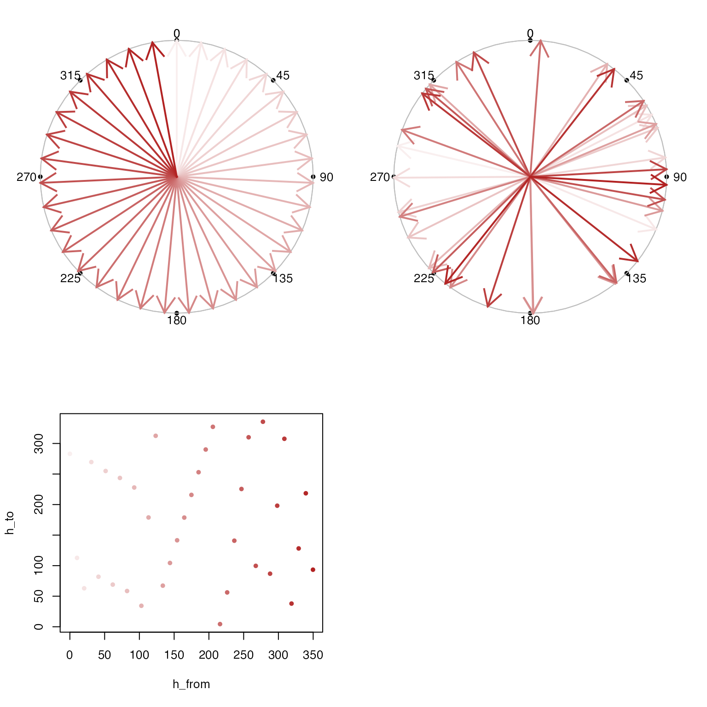

Interpolation for degree angles
approx_degrees(h1, h2, h = NULL, digits = 5, ...)
Arguments
| h1 |
|
|---|---|
| h2 |
|
| h |
|
| digits |
|
| ... | additional arguments are ignored. |
Details
This function is analogous to stats::approx() except for
the special case of degree angles. In this case, degrees
are confined to the range [0, 360], and angle are smoothly
interpolated around the degrees of a circle.
This function should work properly even when the degree angles
in h2 are reversed, or offset. The only implicit requirement
is that angles in "from" should be mapped to one and only one
angle in "to".
See also
Other colorjam hue warp:
display_degrees(),
h2hwOptions(),
h2hw(),
hw2h(),
mean_angle()
Examples
h_colors <- jamba::getColorRamp(c("white", "firebrick"), n=35, trimRamp=c(1, 0)); h1 <- c(12.2, 27.3, 47.0, 66.5, 85.9, 106.3, 131.7, 223.1, 263.2, 277.2, 307.7, 345.3, 372.2) h2 <- seq(from=0, to=360, length.out=13) h_from <- seq(from=0, to=360, length.out=36)[-36] h_to <- approx_degrees(h1, h2, h_from) par("mfrow"=c(2, 2)) display_degrees(h_from, col=h_colors) display_degrees(h_to, col=h_colors) plot(h_from, h_to, pch=20, col=h_colors) h2 <- c(12.2, 27.3, 47.0, 66.5, 85.9, 106.3, 131.7, 223.1, 263.2, 277.2, 307.7, 345.3, 372.2) h1 <- seq(from=0, to=360, length.out=13) h_from <- seq(from=0, to=360, length.out=36)[-36] h_to2 <- approx_degrees(h2, h1, h_from) par("mfrow"=c(2, 2))display_degrees(h_from, col=h_colors) display_degrees(h_to2, col=h_colors) plot(h_from, h_to2, pch=20, col=h_colors) h1 <- c(12.2, 27.3, 47.0, 66.5, 85.9, 106.3, 131.7, 223.1, 263.2, 277.2, 307.7, 345.3, 372.2) h2 <- rev((seq(from=0, to=360, length.out=13))[c(9:12,1:9)]) h_from <- seq(from=0, to=360, length.out=36)[-36] h_to <- approx_degrees(h1, h2, h_from) par("mfrow"=c(2, 2))display_degrees(h_from, col=h_colors) display_degrees(h_to, col=h_colors) plot(h_from, h_to, pch=20, col=h_colors) # apply no transform approx_degrees(h1=0, h2=0, h=c(0, 90, 180, 270))#> [1] 0 90 180 270#> [1] 180 270 0 90#> [1] 180 270 0 90#> [1] 0 270 180 90#> [1] 90 0 270 180#> [1] 90 0 270 180